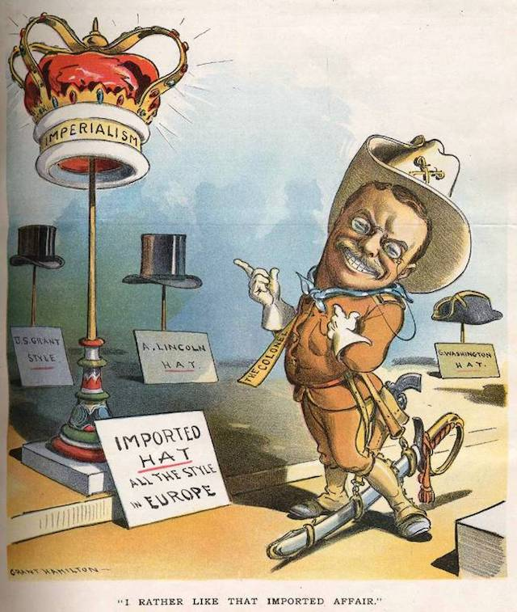

2019-01-30 08:00

Americans love invasions. Trump and his Republicans are on the warpath this week against Venezuela. We’ve heard precious little criticism from either party of Donald Trump’s recognition of “self-declared” president Juan Guaido. Democrats generally remained silent in 2009 when Obama’s Secretary of State, Hillary Clinton, supported a coup in Honduras. And today the “liberal” press still loves US interventions. The New York Times is all but calling for a US coup in Venezuela (“That Mr. Maduro must go has been obvious for some time.”) and the Washington Post ran an editorial by Guaido calling Maduro a “usurper.”
So it was really only a minor, and extremely temporary, aberration in 2013 when Secretary of State John Kerry told the Organization of American States (OAS) that “the era of the Monroe Doctrine is over.” As the UPI reported: “Kerry’s declaration of the end of the Monroe Doctrine era was greeted with hesitant applause among the OAS delegates.”
The OAS had every reason to be suspicious.
It may be useful to recall what the Monroe Doctrine really was — just a few sentences in President James Monroe’s 1823 message to Congress:
“We owe it, therefore, to candor and to the amicable relations existing between the United States and those powers to declare that we should consider any attempt on their part to extend their system to any portion of this hemisphere as dangerous to our peace and safety. With the existing colonies or dependencies of any European power we have not interfered and shall not interfere. But with the Governments who have declared their independence and maintain it, and whose independence we have, on great consideration and on just principles, acknowledged, we could not view any interposition for the purpose of oppressing them, or controlling in any other manner their destiny, by any European power in any other light than as the manifestation of an unfriendly disposition toward the United States.”
Students are taught that the Monroe Doctrine declared that American interests in the Western Hemisphere consisted mainly of the benevolent protection of smaller countries from aggression by the world’s colonial superpowers — France, England, and Spain. Monroe’s assertion that “we have not interfered and shall not interfere” was as quickly abandoned as it was declared. Scarcely twenty years later the United States invaded Mexico. Monroe’s Doctrine, seen in historical light, was actually a declaration that the US fully intended to get into the superpower business itself.
Since then the Doctrine has been interpreted to mean that the US has every right to interfere in its neighbor’s affairs — and the protection of neighbors has nothing to do with it. As the list below shows, there hasn’t been a decade in which the United States didn’t interfere by invasion or imposition of dictatorships.
And we wonder why we have so many refugees at our southern border.
Still not convinced the US is a malevolent imperialist nation? Stephen Kinzer’s book The True Flag is an account of the moment the United States fully embraced Imperialism and never looked back.
One scholar has documented exactly how we have lived up to Monroe’s promise that “we have not interfered and shall not interfere.” I’ll bet you didn’t learn this in Social Studies class:
| Period | Location | Intervention | Comments on U.S. Role |
|---|---|---|---|
| 1823 | Monroe Doctrine - “shall not interfere” | ||
| 1846 | Mexico | War | Mexican-American War - US takes a third of Mexico |
| 1890 | Argentina | Troops | Buenos Aires interests protected |
| 1891 | Chile | Troops | Marines clash with nationalist rebels |
| 1891 | Haiti | Troops | Black workers revolt on U.S.-claimed Navassa Island defeated |
| 1894 | Nicaragua | Troops | Month-long occupation of Bluefields |
| 1895 | Panama | Naval, troops | Marines land in Colombian province |
| 1896 | Nicaragua | Troops | Marines land in port of Corinto |
| 1898 | Cuba | Naval, troops | Seized from Spain, U.S. still holds Navy base at Guantanamo |
| 1898 | Puerto Rico | Naval, troops | Seized from Spain, occupation continues |
| 1898 | Nicaragua | Troops | Marines land at port of San Juan del Sur |
| 1899 | Nicaragua | Troops | Marines land at port of Bluefields |
| 1903 | Honduras | Troops | Marines intervene in revolution |
| 1903 | Dominican Republic | Troops | U.S. interests protected in Revolution |
| 1906 | Cuba | Troops | Marines land in democratic election |
| 1907 | Nicaragua | Troops | “Dollar Diplomacy” protectorate set up |
| 1907 | Honduras | Troops | Marines land during war with Nicaragua |
| 1908 | Panama | Troops | Marines intervene in election contest |
| 1910 | Nicaragua | Troops | Marines land in Bluefields and Corinto |
| 1911 | Honduras | Troops | U.S. interests protected in civil war |
| 1912 | Cuba | Troops | U.S. interests protected in Havana |
| 1912 | Panama | Troops | Marines land during heated election |
| 1912 | Honduras | Troops | Marines protect U.S. economic interests |
| 1912 | Nicaragua | Troops, bombing | 20-year occupation, fought guerrillas |
| 1913 | Mexico | Naval | Americans evacuated during revolution |
| 1914 | Dominican Republic | Naval | Fight with rebels over Santo Domingo |
| 1914 | Mexico | Naval, troops | Series of interventions against nationalists |
| 1914 | Haiti | Troops, bombing | 19-year occupation after revolts |
| 1916 | Dominican Republic | Troops | 8-year Marine occupation |
| 1917 | Cuba | Troops | Military occupation, economic protectorate |
| 1918 | Panama | Troops | “Police duty” during unrest after elections |
| 1919 | Honduras | Troops | Marines land during election campaign |
| 1920 | Guatemala | Troops | 2-week intervention against unionists |
| 1921 | Costa Rica | Troops | |
| 1921 | Panama | Troops | |
| 1924 | Honduras | Troops | Landed twice during election strife |
| 1925 | Panama | Troops | Marines suppress general strike |
| 1932 | El Salvador | Naval | Warships sent during Faribundo Marti revolt |
| 1947 | Uruguay | Nuclear threat | Bombers deployed as show of strength |
| 1950 | Puerto Rico | Command operation | Independence rebellion crushed in Ponce |
| 1954 | Guatemala | Command operation, bombing, nuclear threat | CIA directs exile invasion and coup d’etat after newly elected government nationalizes unused U.S.’s United Fruit Company lands; bombers based in Nicaragua; long-term result: 200,000 murdered |
| 1958 | Panama | Troops | Flag protests erupt into confrontation |
| 1961 | Cuba | Command operation | CIA-directed exile invasion fails |
| 1962 | Cuba | Nuclear threat, naval | Blockade during missile crisis; near-war with Soviet Union |
| 1964 | Panama | Troops | Panamanians shot for urging canal’s return |
| 1965 | Dominican Republic | Troops, bombing | Marines land during election campaign |
| 1966 | Guatemala | Command operation | Green Berets intervene against rebels |
| 1973 | Chile | Command operation | CIA-backed coup ousts democratically elected Marxist president |
| 1981 | El Salvador | Command operation, troops | Advisors, overflights aid anti-rebel war, soldiers briefly involved in hostage clash; long-term result: 75,000 murdered and destruction of popular movement |
| 1981 | Nicaragua | Command operation, naval | CIA directs exile (Contra) invasions, plants harbor mines against revolution; result: 50,000 murdered |
| 1982 | Honduras | Troops | Maneuvers help build bases near borders |
| 1983 | Grenada | Troops, bombing | Invasion four years after revolution |
| 1987 | Bolivia | Troops | Army assists raids on cocaine region |
| 1989 | Panama | Troops, bombing | Nationalist government ousted by 27,000 soldiers, leaders arrested, 2000+ killed |
| 1994 | Haiti | Troops, naval | Blockade against military government; troops restore President Aristide to office three years after coup |
| 2002 | Venezuela | Command operation | Failed coup attempt to remove left-populist president Hugo Chavez |
| 2004 | Haiti | Troops | Removal of democratically elected President Aristide; troops occupy country |
| 2009 | Honduras | Command operation | Support for coup that removed president Manuel Zelaya |
| 2019 | Venezuela | Unfolding | Support for coup |